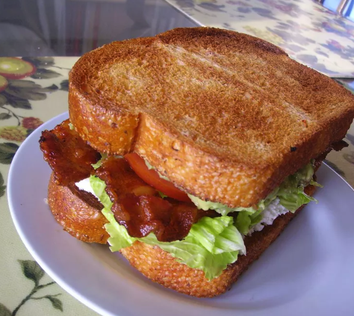

BLT

Description
This is a new twist on an old favorite. Serve with chips or fresh fruit.
Ingredients
- 8 slices bacon
- 8 slices bread, toasted
- ¼ cup guacamole
- ¼ cup cream cheese
- 4 lettuce leaves
- 4 slices tomato
Steps
- Place the bacon in a large, deep skillet, and cook over medium-high heat, turning occasionally, until evenly browned, about 10 minutes. Drain the bacon slices on a paper towel-lined plate.
- Spread the guacamole on 4 slices of toasted bread and the cream cheese on the remaining 4 slices. Arrange a lettuce leaf, tomato slice, and two pieces of bacon on top of 4 slices of bread and top with the remaining slices.